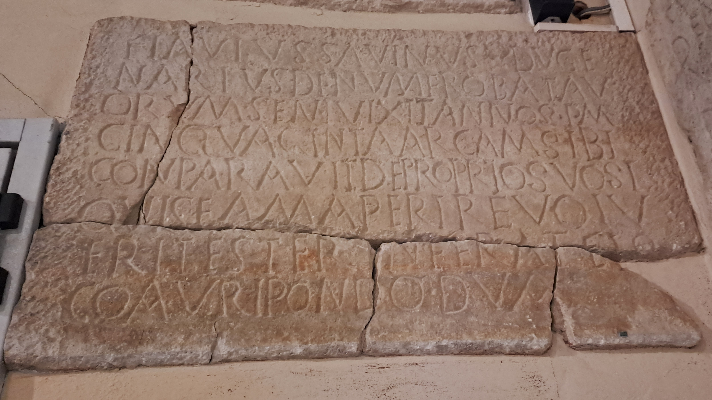

The Inscription of Savinus
PHYSICAL DESCRIPTION
- Type
- Frontal slab of the sarcophagus.
- Material(s)
- Limestone.
- Execution
- Inscribed.
- Dimensions
- 60.5 × 102.5 cm
- Epigraphic Field
- 51 × 88 cm
- Letters Height
- 6-7 cm
Palaeographic comment
Dextrorse direction, horizontal alignment, vertical module, irregular ductus, left-aligned layout.
A sometimes with a broken crossbar.
E and F strongly compressed laterally.
F with the upper stroke oblique, ascending towards the right.

INSCRIPTION
INTERPRETATIVE TRANSCRIPTION
Savinus, duce
=
narius de numero Batav
=
orum seni(orum), vixit annos p(lus) m(inus)
cinquaginta (!) arcam sibi
conparavit (!) de proprio suo. Si
quis eam aperire volu
=
erit ester (!), inferat fiṣ
=
co auri pondo duodua.
APPARATUS CRITICUS
1. FL(AVIVS),
EDR097907
.
3. SEN(IORVM) <QV>I VIXIT, Bertolini 1875a,
EDR097907
.
5. COMPARAVIT, Bertolini 1875a, Bertolini 1875b,
CIL V 8759,
ILS 2797,
ILCV 499
.
TRANSLATION
Flavius Savinus, ducenarius of the numerus of the Batavi seniores, lived approximately fifty years; he purchased the sarcophagus for himself at his own expense.
If anyone, that is a stranger, should wish to open the sarcophagus, he shall pay two (Roman) pounds of gold to the fiscus.
PEOPLE
Flavius Savinus
- NOMEN
- Flavius
- COGNOMEN
- Savinus
- GENS
- Flavia
- ORIGIN (of the name Savinus)
- latin
- GENDER
- male
- OCCUPATION
- soldier
- RANK
- ducenarius
- NUMERUS
- Batavi Seniores
- ROLE
- dedicator/deceased
Bibliography
| Bertolini 1875a, 110, n. 48. |
| Bertolini 1875b, 110, n. 2. |
| CIL V 8759 |
| ILS 2797 |
| ILCV 499 |
| Hoffmann 1963, 41, n. 18. |
| Lettich 1983, 82, n. 38. |
- EDR
-
EDR097907
- Author of the record:
- Damiana Baldassarra
- Date:
- 26-11-2007
COMMENTARY
Flavius Savinus was a ducenarius of the Batavi seniores. The ducenarius commanded two hundred men and represented one of the highest ranks among the subaltern grades, inferior only to the senator and the primicerius.
The advanced age of fifty years and the military rank indicate a veteran who rose through the ranks, starting from the lowest levels.
The cognomen Savinus, of Latin origin, along with other names of non-Germanic origin, indicates that the numerus of the Batavi at that time was no longer composed solely of Germans, as the association with the eponymous Germanic tribe would suggest, but of a heterogeneity of soldiers from diverse backgrounds.
The burial of Savinus is located in the immediate vicinity of the sarcophagi of two other members of the Batavi: Flavius Carpilio and Flavius Ursacius. Furthermore, slightly further east, are the arcae of the Batavi Flavius Victurinus and Flavius Launio. This spatial proximity seems to confirm the existence of a strong spirit of camaraderie among members of the same military contingent.
Similarly to the inscription of Launio, it is stated here that no outsider (ester = exter = externus) is permitted to open the sarcophagus, under penalty of a fine. This specification, rare in other epigraphs, reinforces the hypothesis that the prohibition was aimed at anyone who was not a member of the same numerus.